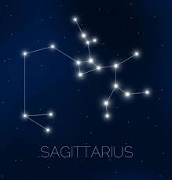

궁수자리
Along with Aries and Leo, Sagittarius is a part of the Fire Trigon as well as the last of the reproductive trinity.[4] It also follows Gemini and Virgo as third of the mutable signs, which are the signs that feature changeable quality.[5] When Sagittarius is depicted as an archer, then he is classified as human but when represented as a centaur, he is nonhuman (bestial).[6] However, the classification of the astrological sign as a human or bestial does not carry practical consequences for interpretation.[6] As an archer, Sagittarius is said never to fail in hitting the mark and this depiction alludes to the power of prophecy, hence, the claim that seers and prophets are born in this sign.[4]